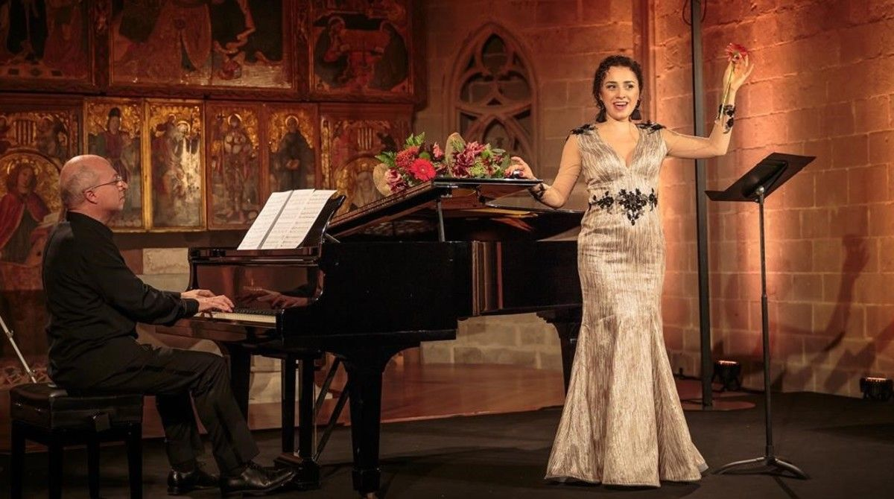
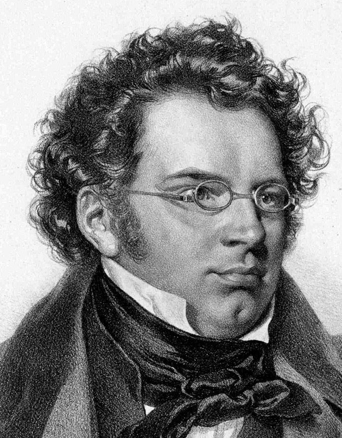
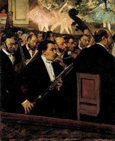

El Lied: música para voz y piano
El Lied es una de las formas más representativas del Romanticismo musical. Se trata de una canción para voz y piano en la que música y poesía se integran de manera íntima. A diferencia de la canción clásica, el piano adquiere un papel expresivo fundamental, dialogando constantemente con la voz.
El Lied permite explorar emociones profundas a partir de textos poéticos, generalmente de temática amorosa, melancólica o existencial. Compositores como Franz Schubert y Robert Schumann desarrollaron este género con gran sensibilidad expresiva.
Interpretación de Lied: diálogo expresivo entre voz y piano
Franz Schubert (1797–1828), uno de los grandes compositores de Lied

Robert Schumann (1810–1856), Lied romántico y expresión subjetiva
Poesía instrumental y música pura
La poesía instrumental y la música pura parten de la idea de que la música puede expresar emociones y estados anímicos sin necesidad de un texto o una historia explícita. En estas obras, el sonido se convierte en un lenguaje autónomo.
El oyente es invitado a una experiencia subjetiva, en la que cada interpretación emocional es válida. Esta concepción refuerza la libertad expresiva característica del Romanticismo.
La orquesta romántica como medio de expresión poética sin palabras